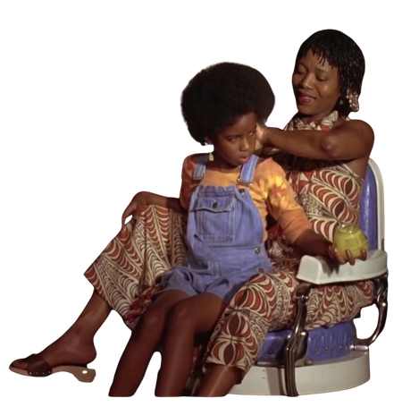

Black Hair, Black Culture, Environmental and Health Justice for All.
Before exposure,
there is culture.
Black hair carries memory, identity, creativity and care. We are building a future where caring for our hair never means compromising our health.
Explore our workDiscover our framework

Black hair care is not the problem.
Black hair carries history, identity and care. Our work connects culture, science, community power and accountability to build safer systems.
Understand our frameworkExplore our programs